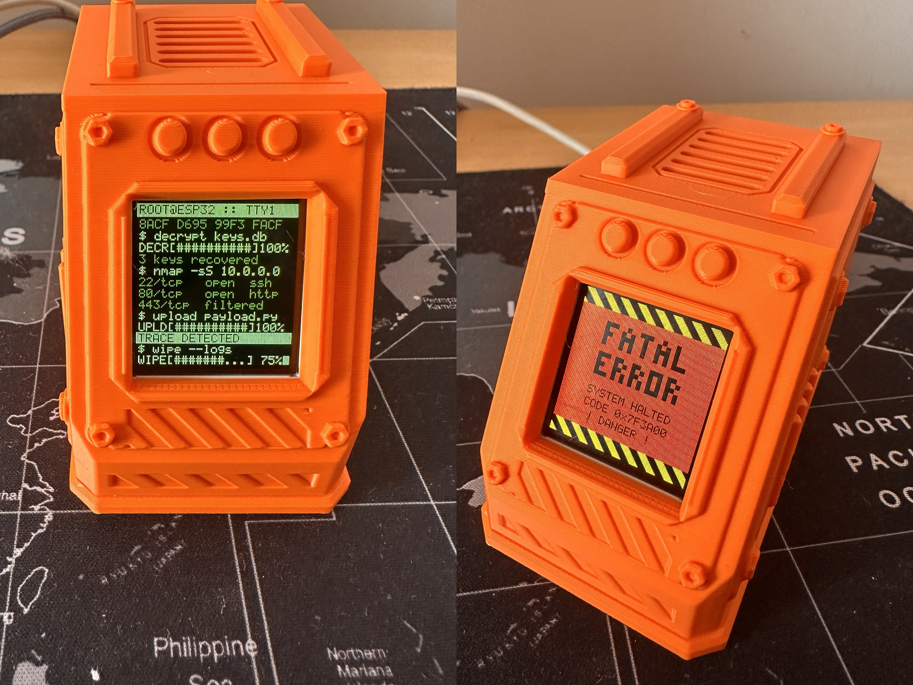
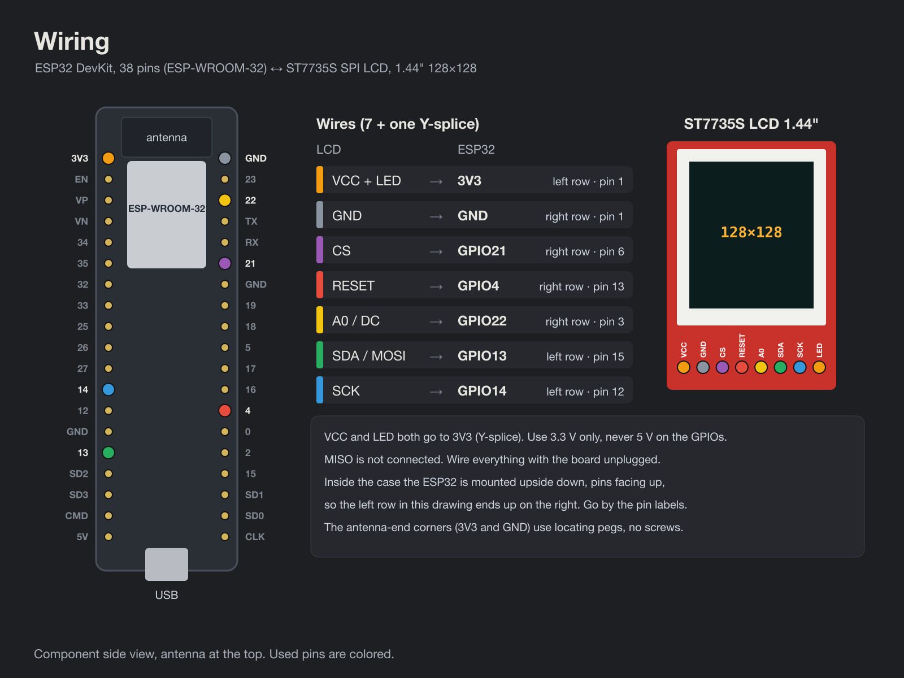
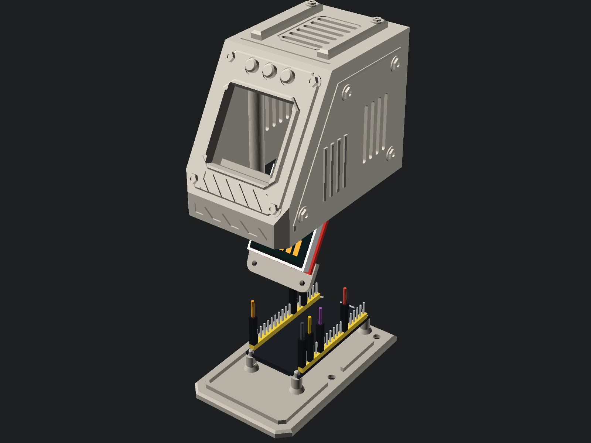
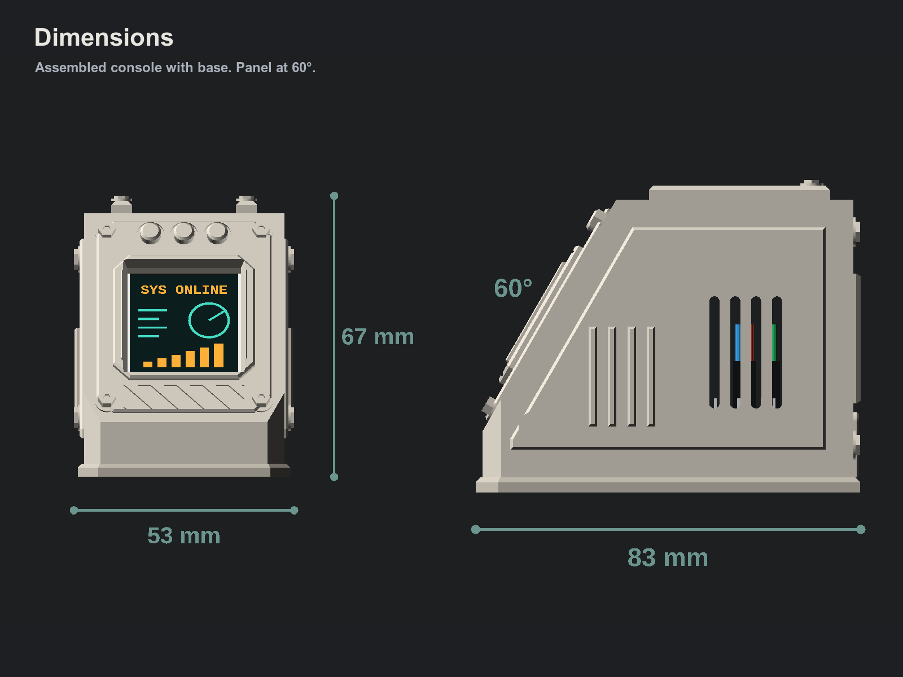

Assembly guide · ESP32 DevKit 38-pin + 1.44" ST7735S screen

| Qty | Part | Notes |
|---|---|---|
| 1 | ESP32 DevKit, 38 pins (ESP-WROOM-32) | PCB approx. 28 × 53 mm, holes 24 × 51 mm apart |
| 1 | ST7735S SPI LCD, 1.44", 128×128 | Red PCB 30 × 44 mm |
| 8 | Female-female Dupont jumper wires | One used as a Y-splice for VCC + LED |
| 2 | M2.5 × 6 self-tapping screws | ESP32 to base |
| 2 | M2 × 6 screws | Screen retainer |
| 4 | M3 × 10 countersunk screws | Base to shell |
| 4 | 10 mm rubber feet | Optional |
| 1 | Micro-USB data cable | Power and programming |
| Part | File | Orientation |
|---|---|---|
| Shell | shell.stl | Standing on its open bottom edge |
| Base | base.stl | Flat |
| Screen bracket | screen_bracket.stl | Flat |
Recommended settings: PLA, 0.4 mm nozzle, 0.20 mm layers, 3 walls, 15 % gyroid infill, no supports, thick bridges on. All three parts fit on one plate: about 3 h and 79 g on a Bambu Lab A2L.

| LCD pin | ESP32 pin | Function |
|---|---|---|
| VCC + LED | 3V3 | Power and backlight (Y-splice) |
| GND | GND | Ground |
| CS | GPIO21 | Chip select |
| RESET | GPIO4 | Reset |
| A0 / DC | GPIO22 | Data / command |
| SDA / MOSI | GPIO13 | SPI data |
| SCK | GPIO14 | SPI clock |

Exploded view: shell, screen with retainer, ESP32 and base.
The MicroPython firmware and web panel shown in the photos are at github.com/lamaro/esp32-sci-fi-retro. The case also works with any other firmware that drives an ST7735S over SPI: Arduino (Adafruit ST7735, TFT_eSPI) or ESPHome.
The screen is mounted with its pins at the top, so the image must be rotated 180° compared with the usual orientation.
0x08, with the 128×128 window offset by column 2, row 1.setRotation(2)), and adjust the column/row offset if you see a stripe of noise on one edge.20 MHz works with short Dupont wires. If you see glitches or wrong colors, lower the SPI clock.

Outer size: 53 × 83 × 67 mm.
The base fits a 38-pin ESP32 DevKit with mounting holes 24 × 51 mm apart. Some clones differ.
If you're not sure about your board, print the base first (about 30 minutes) and test the fit. If needed, change esp_hole_span in scifi_console.scad and export the STL again with OpenSCAD.